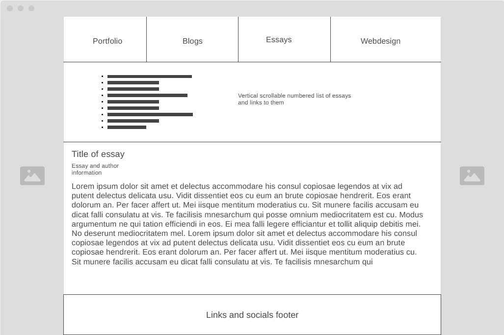

The IxD process in very interesting. Thinking about the design and how you can get users to do what you want through various "effects" and "laws", really harks back to and enforces this idea that we are in the business of manipulating people (not in a bad way of course). Visual communication is a very strong and necessary part of design especially for a website. Like a lot of things when you get into the meat and potatoes, there is a lot that goes into UX and UI design that I would not have thought of.
Next I’ll be showing my wireframes and navigation flow mapped out.
Planned home page wireframe
This is the wireframe for the home page. The idea as stated prior is for the navbar to be sticky and for all of the main content that I want to show off being vertically down the page, similar to how social feeds work. This is the main page for people to see my portfolio so the media is the main focus. The pictures on the side are a background "bleeding" through similar to how Steam profiles look. The Webdesign page will look very similar.
Planned blog page wireframe
This is the blog page. All of the individual blogs can be clicked on from here, as a numbered list. This will take you to the following blog entry page.
Planned blog entry page wireframe
The essay page and essay entry pages are practically the same.
Planned essay page wireframe

Planned essay entry page wireframe
And then finally the mapping of my navigation from the home page.
Rough user flow from the home page
And not pictured here each page will also have the navbar that links to all of the other pages so everything is always easily accessible from each page. My focus for this coming week is the styling and some further rounding out of the design. So far I would say the greatest challenge has been finding how semantic and in detail to go with things like the micro formatting and data attributes.